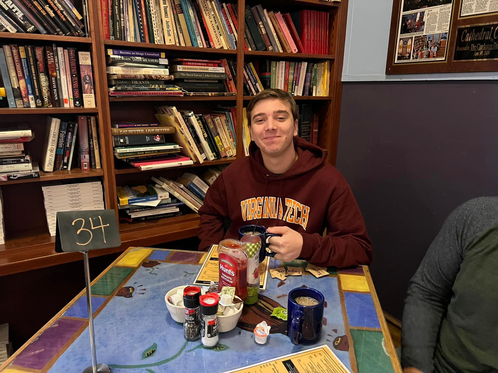

About Starfall

What is it?
Starfall is a web novel, which basically means that I, the author, publish it online for free for you, the reader, to read. For free. What do I get out of this? Mostly just a creative outlet for my work and the opportunity to tell a cool story that I want to tell. But it's also an opportunity to put something out there on the interwebs that doesn't have to go through publishers. Personally, I love indie stuff, and here, no publisher can tell me what to do, nor can they tell me whether what I write is good or not. So...ha ha.
In all seriousness, I do believe in indie creations, and I believe they're where some of the coolest creative works flourish. Think of The Amazing Digital Circus or Lackadaisy (if you get those references). This website in particular is heavily inspired by those who've done it before me like Homestuck or The Wandering Inn. So the philosophy for this site is: Go Wild! Do whatever you want! This doesn't mean that I'm trying to make the prose bad or anything. I actually have a very high view of story and lyrical prose. But I'm not constrained to length or marketing or any of those other expectations here. Yippee! Expect things to get a little weird.
What's it about?
Starfall is about space. And about people in space. Oh, and the stars bless people with magic and might be sentient in some sort of way as well? People worship them, that's for sure. Other than that, that's about all I've got so far, but I'll update this once I have more clarity
Starfall is a Science Fantasy Space Opera, to be more specific. I like the idea of huge drawn-out epics, and I wanted to make one myself, across a huge stretch of time, across a huge cast of characters, and across a huge amount of locations that could really do anything or go anywhere depending on where the story wants to go. I like stories that are brilliant visually, emotionally moving, philosophically engaging, and 'inevitable'--i.e. feel like they're building towards a conclusion that couldn't have happened any other way. "Science Fantasy Space Opera" feels like the easiest way to get there. Hopefully it's effective!
About The Author
Hey, that's me! To your right (or probably below you if you're on mobile), you can see a picture of my ugly mug in its natural environment: with coffee. surrounded by books. Anyways, I'm an author--mostly of Science Fiction and Fantasy. Believe it or not, I mainly write Fantasy when trying to break into traditional publishing. I'm currently a student, but I'll be graduating from Virginia Tech in a few weeks, so I'll probably be a grad/alum depending on when you're reading this or if/when I choose to update it. I got my education in Creative Writing and Technical Writing with a Computer Science minor, but Creative Writing has always been my first love.

I've done a lot of writing in and out of fantasy and sci-fi spaces, generally starting more stories than I'll ever finish, and I've tried my best to study speculative fiction as a genre from an academic lens, which I enjoy. I think myths, legends, and using speculative fiction as a lens for meaning-making is pretty cool. My stories tend to be a bit out there, and artistic in nature, but whether it's a world orbiting a white dwarf, a renaissance-era world based on punk music, or a country where it's always winter, I'm always creating something cool.